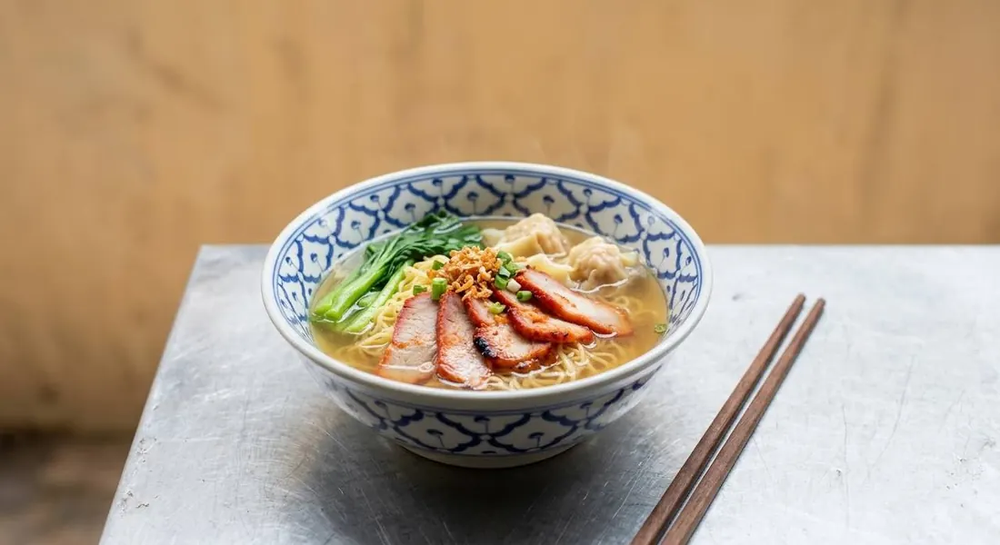

Springy yellow egg noodles in a clean pork-bone broth under lacquered red roast pork — the bowl every Bangkok soi feeds on.

บะหมี่หมูแดง is the Chinese-Thai noodle shop condensed into one bowl: บะหมี่ไข่, yellow egg noodles made with egg and lye water, blanched so fast they stay springy; หมูแดง, the red roast pork — the char siu that gives the dish its name — lacquered with a sweet-savoury marinade; and a broth that must stay clean and clear under all that richness. Wontons and blanched greens join depending on the shop.
The red pork is the project, and the Thai sources are precise about the cut. SGE's guide compares them outright: pork neck (สันคอ) wins — marbled with fat so it roasts tender and juicy, "but the colour comes out less pretty than other cuts." Pim's recipe uses a kilogram of neck too. The lacquer is sugar-led — SGE's marinade runs a hundred grams of sugar to half a kilo of pork — with the classic trio of coriander root, garlic and white pepper doing the aromatic work, and red colouring doing what its name says.
Then the service question: น้ำ (soup) or แห้ง (dry). In the soup version the noodles sit in the clean broth; in the dry version they're dressed with the reduced roasting sauce instead. Wongnai's home recipe simmers the leftover marinade with oyster sauce, soy and cornflour into exactly that ladling sauce. Both versions are the same dish — the sources just disagree on which one you should order.
| Thai | English | Amount |
|---|---|---|
| สันคอหมู | Pork neck | 500 g |
| รากผักชี กระเทียม พริกไทย | Coriander root, garlic, white pepper (pounded) | 15 g |
| น้ำตาลทราย | Sugar | 100 g |
| งาขาวคั่ว | Toasted white sesame | 10 g |
| น้ำมันงา | Sesame oil | 20 g |
| ซอสปรุงรส | Seasoning sauce | 1 tbsp |
| น้ำมันหอย | Oyster sauce | 2 tsp |
| ซีอิ๊วดำ | Dark soy sauce | 1 tsp |
| สีผสมอาหารสีแดง | Red food colouring | as needed |
To serve: fresh yellow egg noodles, 200 g hong kong choy sum or kana, ~1.2 L hot pork-bone broth, fried garlic, chillies in fish sauce. Wongnai's dry-style sauce (for the แห้ง version): leftover marinade, oyster sauce 2 tbsp, white soy 6 tbsp, seasoning sauce 2 tbsp, sugar 3 tbsp, water ½ cup, cornstarch 2 tbsp — simmered until glossy.
Pork cut. SGE and Pim use pork neck — marbled, tender. Wongnai uses loin strips — leaner, prettier colour. Neck tastes better; loin looks better.
From scratch or packet. SGE and Wongnai build the marinade from raw ingredients; Pim uses the market's ready-made red-pork sauce thinned with evaporated milk — the authentic stall shortcut, and the reason so many bowls taste alike.
Honey vs sugar. Wongnai's lacquer runs honey plus brown sugar; SGE's is plain sugar plus sesame. Both caramelise; honey adds its own note.
Five-spice. Wongnai's marinade carries a tablespoon of ผงพะโล้ (five-spice powder); SGE's doesn't mention it. The spice edge marks the shop-style version.
Soup or dry. Wongnai serves dry with the reduced sauce; Pim serves the full soup with a from-scratch pork-bone broth (7 litres of water, radish, pickled garlic, rock sugar). The same red pork stars in both.
Red or orange. SGE colours red; Wongnai colours orange. The classic shop colour is a deep red — but the sources can't even agree on the bottle.
This recipe is translated from the following Thai-language sources. Where they disagree, we've said so.
1. SGE Thai — "วิธีทำ หมูแดง ใน 3 ขั้นตอน เนื้อนุ่มสีสวยมาก!" (the marinade used here, with the cut comparison) — sgethai.com
2. Wongnai (GopOpOp, 4.7K reads) — "บะหมี่หมูแดงหมูกรอบ" (full bowl + dry-style ladling sauce + moo grob) — wongnai.com
3. Pim's Kitchen — "บะหมี่เกี๊ยวหมูแดง" (neck char siu, wontons, 7-litre pork-bone broth) — pim.in.th
4. Lemon8 (nongnokpoolsawat) — "ทำบะหมี่หมูแดงทำเอง + น้ำราด/ซอสราดหมูแดงแบบร้าน" (home version + restaurant-style sauce) — lemon8-app.com